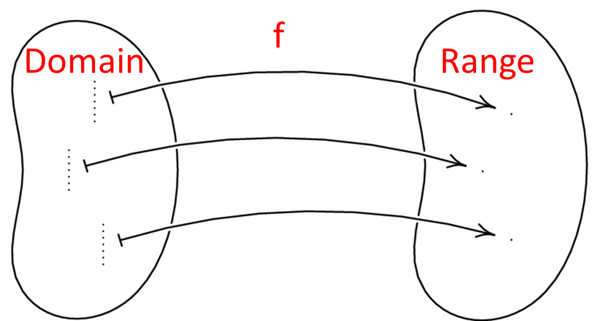

Relations and Functions
Functions
A function is a relation in which there is a unique output for each input. This means that each value of the independent variable (the domain) must correspond to one, and only one, value of the dependent variable (the range).
Function notation f(x), is used to represent the values of the dependent variable in a function. Therefore y = f(x).

The Vertical Line Test
To check if something is a function, we perform the Vertical Line Test. If we draw a vertical line anywhere on the graph and it touches the graph only once, then it is a function. If any vertical line touches the graph more than once, it is not a function.

Representation of Functions
Functions can be represented graphically, numerically, or algebraically.